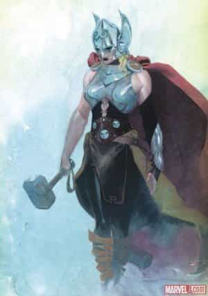

Michael is the author of Staying Married in a Degenerate Age. Follow him on Twitter or Facebook. You can read more of his writing at Honor and Daring.


The popular media (Hollywood movies, television, music, commercials, comics, etc.) has always been aware of its ability to influence public opinion. As early as 1960, television shows such as the Twilight Zone were conveying messages to the public.
In the Twilight Zone episode The Monsters are Due on Maple Street, aliens rely on the inherent prejudice of middle class suburbanites to induce them to paranoia. The residents of Maple Street end up killing each other out of suspicion so that the aliens can take over without firing a shot.
In case the viewers were too dense to get the message, the show explicitly clobbers them over the head at the end of the episode:
The tools of conquest do not necessarily come with bombs and explosions and fallout. There are weapons that are simply thoughts, attitudes, prejudices — to be found only in the minds of men. For the record, prejudices can kill — and suspicion can destroy — and a thoughtless frightened search for a scapegoat has a fallout all of its own — for the children — and the children yet unborn. And the pity of it is — that these things cannot be confined — to the Twilight Zone.
The media is effective because it presents its message under the guise of entertainment. People who would resent hearing a moralistic sermon at church have no problem getting browbeaten for two hours while watching a preachy film like the 2004 movie Crash.

But usually, the messages are presented in a less heavy-handed way. The NBC sitcom Will & Grace, which ran from 1998 until 2006, adroitly made use of comedy and charming characters to introduce the wider public to gay culture.
Vice President Biden stated that Will & Grace “probably did more to educate the American public on LGBT issues more than almost anything anybody has ever done so far.” It is not an overstatement to say that the sitcom paved the way for the success of the same-sex marriage movement.
Another familiar trope in the media is that women can do anything that men can do. It is based on the idea that men have systematically oppressed women since the beginning of the human race. Because of this oppression, women no longer have the confidence to try to achieve great things.
If women could only be convinced of their inherent greatness, they would design buildings, make scientific discoveries, engineer bridges, and conquer empires at exactly the same rate as men—except that they would be better at it.
Any deviation from the idea that men and women are equal in every way is met with immediate outrage. When Harvard President Lawrence Summers suggested that the shortage of women in the sciences was partially due to innate differences in mathematical ability, there was an uproar. Summers was forced to apologize and resign. The Church of Progressivism brooks no heresy—not even from one of its own.
The Girl Power message crops up in the most unlikely places. If you are a fan of the work of J.R.R. Tolkien, you may have noticed that the movie, The Hobbit: The Desolation of Smaug, introduced a new character that was not in the original book—a female warrior elf.
While director Peter Jackson had remained scrupulously faithful to Tolkien’s original vision with The Lord of the Rings movies, he must have felt pressure to include a Girl Power character in The Hobbit series. Evangeline Lily, the actress who played the female warrior elf, put it this way: “In this day and age, to put nine hours of cinema in the theaters for young girls to go and watch and not have one female character is subliminally telling them you don’t count, you’re not important and you’re not pivotal to story.”
It is not just movies of course. In 2014, Marvel Comics launched a new Thor, who just happens to now be a woman.

Doing something like this is a win-win for Marvel. It attracts lots of free publicity for the company. People who are upset with Thor becoming a woman will be labeled as troglodytes who need to stop hating and keep up with the times. Progressive outlets will praise Marvel for its courage. But if it turns out that the new female Thor does not sell very well, the old Thor will quietly return.
Laverne Cox
Even though the media was victorious in its campaigns to mainstream same-sex relationships and to push Girl Power, don’t think that the march of progress will stop there. The media is now pushing the next phase of correct thinking and behavior.
One of these new messages is the mainstream acceptance of transgender individuals. Vice President Biden has called transgender discrimination “the civil rights issue of our time,” and President Obama even mentioned transgender people in his State of the Union speech.
We are already starting to see more transgender individuals on television. Of course there was the famous appearance of Chaz Bono on Dancing With The Stars back in 2011. Bono was also the subject of a documentary film called Becoming Chaz that detailed his experiences in transitioning from female to male.
Actress Laverne Cox is a transgender woman who stars on the Netflix series Orange Is The New Black. In 2014, Cox became the first transgender person to appear on the cover of Time magazine. Lauren Levinson, an editor at Popsugar, described Cox as having “doll eyes, glowing skin, and voluminous curls.”
Reality TV is getting into the act as well. The E! Television network was developing a show to document the transition from male to female of former Olympian Bruce Jenner. Plans for the show have been temporarily shelved due to Jenner’s involvement in an auto accident that left one person dead, but I would not be surprised to see it restart once the legal issues are settled.
Bruce Jenner – Making the transition
Finally, we are probably going to see more transgender individuals in commercials. Some edgy companies, like American Apparel, have already started this with their use of transgender models and their controversial use of a 15-year-old boy named Brendan in one of their most recent ads.
What is next on the agenda? I’d be interested to hear your thoughts in the comments. My guess is that we will see campaigns for the mainstream acceptance of more alternative lifestyles such as polygamy and polyamory.
The one thing we can be sure of, though, is that our elites will continue to use the media to teach us the right path—or at least the one that lines their wallets and fortifies their power.
Read More: 8 Ways To Spot A Transsexual